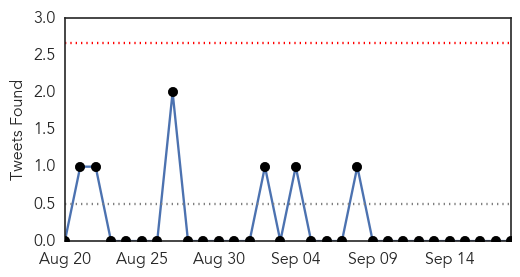

Cholera
30-Day Web Trend
2 alerts, 0 warnings

30-Day Twitter Trend
0 alerts, 0 warnings

Article Locations

Article Confidences

Top Articles:
Top Tweets:
-
No tweets found for Sep 18, 2015
Unknown
30-Day Web Trend
0 alerts, 0 warnings

30-Day Twitter Trend
1 alerts, 0 warnings

Article Locations

Article Confidences
Top Articles:
- 0.991
- Flu vaccine protects well this year, per CDC
- 0.991
- CDC Says Flu Vaccine Should Be More Effective This Season
- 0.981
- Saudi minister says MERS cases are reducing before haj
- 0.980
- Saudi minister says MERS cases are reducing before hajSaudi Arabia
- 0.980
- MERS cases declining before haj
- 0.965
- Find Your Flu Shot Clinic
- 0.964
- Birds
- 0.958
- CDC Funds UTHealth Scientist's Outreach and Educational Program on Chagas Disease in South Texas
- 0.943
- Gastro outbreak in Dominica following Tropical Storm Erika
- 0.900
- WALB.com, South Georgia News, Weather, Sports
- 0.893
- Gonorrhoea outbreak: National alert over ‘super strain’ of sexually transmitted disease
- 0.892
- Devastated by Earthquake, Nepal’s Fragile Water Supply Is in Danger
- 0.883
- Battling the "Blacksburg Plague"
- 0.874
- Drug-resistant gonorrhea spreads in northern England — RT UK
- 0.873
- Arizona Woman is Third Death in Cucumber Salmonella Outbreak
- 0.871
- Outbreak of drug resistant gonorrhoea detected in Oldham and Macclesfield
- 0.863
- Cases of gonorrhoea on the rise with new drug-resistant cases reported
- 0.857
- 'Super-gonorrhoea': health alert over Leeds outbreak
- 0.852
- 'Super-gonorrhoea' outbreak in Leeds
- 0.843
- Drug resistant gonorrhoea has sparked a national alert in the UK - here's the info to keep you safe
- 0.829
- MSF travels the extra mile to treat sleeping sickness in Democratic Republic of Congo
- 0.823
- Idaho joins Washington in confirming bluetongue outbreak in deer
- 0.820
- Pima County woman who reportedly ate tainted cucumbers dies
- 0.820
- Pima County woman dies after eating cucumbers
- 0.818
- Listeria tied to soft cheese sickens 24, kills 1
- 0.815
- Cat exposed 6 people to rabies in Upstate
- 0.806
- Pima County woman who reportedly ate tainted cucumbers dies
- 0.805
- Lyme disease: Experts and sufferers face-off to debate existence of tick-borne condition in Sydney
- 0.799
- Drug-Resistant 'Super-Gonorrhea' Is Sweeping Northern England
- 0.799
- DRC: MSF travels the extra mile to treat sleeping sickness
- 0.784
- Gonorrhoea cases soared last year as experts warn of 'super' drug resistant strain
- 0.784
- Residents encouraged to get flu shots
- 0.775
- Public Health Officials Investigating Multistate Outbreak of Listeriosis Linked to Soft Cheeses
- 0.768
- Effective strategy to protect steelhead trout from IHNV
- 0.767
- Mother tells of daughter’s debilitating illness as Ham&High investigates HPV vaccine safety
- 0.749
- Update on EHD: Illinois hunting
- 0.729
- Taliban stage deadly assault on Pakistan air force base
- 0.729
- As Croatia closes its border, where next for refugees?
- 0.729
- Senegal and Benin launch mediation efforts after Burkina Faso coup
- 0.718
- Rare super strain of gonorrhoea spreads to Scunthorpe
- 0.716
- Drug resistant gonorrhoea triggers national alert
- 0.716
- An extra reason to be careful on the river this weekend
- 0.715
- Drug-resistant strain of gonorrhoea spread by promiscuous under 25s
- 0.711
- Clarksville, TN Online Tennessee Department of Health says Newborn Screening is best way to detect Sickle Cell Disease and Other Diseases in Tennessee
- 0.709
- Call to action: You can help end SA’s TB epidemic
- 0.696
- Malaria deaths fall 60pc since 2000
- 0.657
- EHV-1 and EHV-9 make themselves at home among African herbivores
- 0.654
- State Confirms Bluetongue Disease in Deer - NBC Right Now/KNDO/KNDU Tri-Cities, Yakima, WA
- 0.651
- South Sudan: First there was war, now fire
- 0.650
- Millions Of Lives Have Been Saved From Malaria Thanks To This Invention
Showing top 50 articles...
Top Tweets:
- 0.771
- Bueno, no más para PuertoRico desde el 1 de noviembre. @googlewallet Es lo que habrá de ahora en adelante.